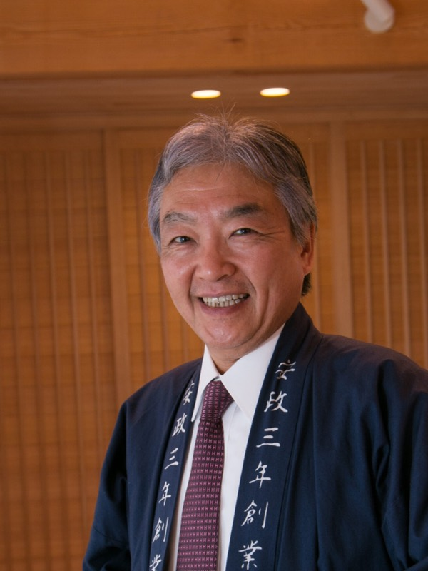
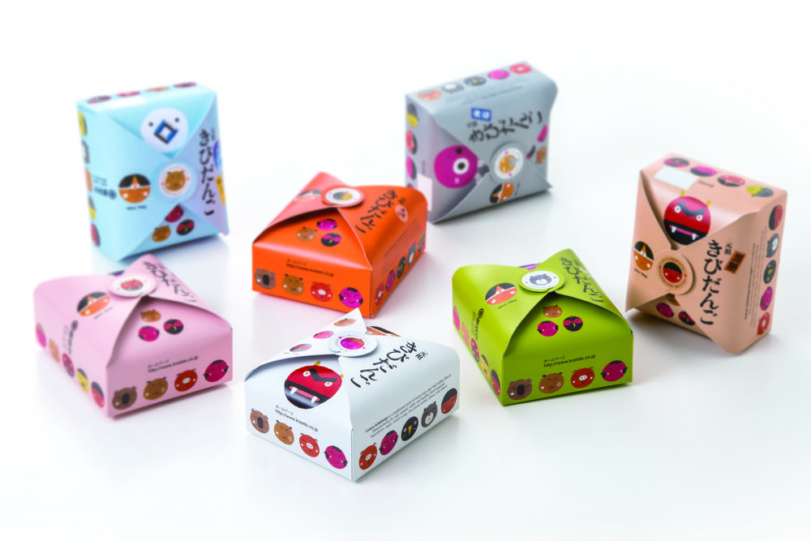
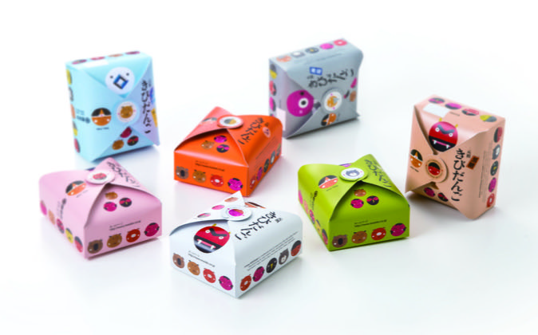
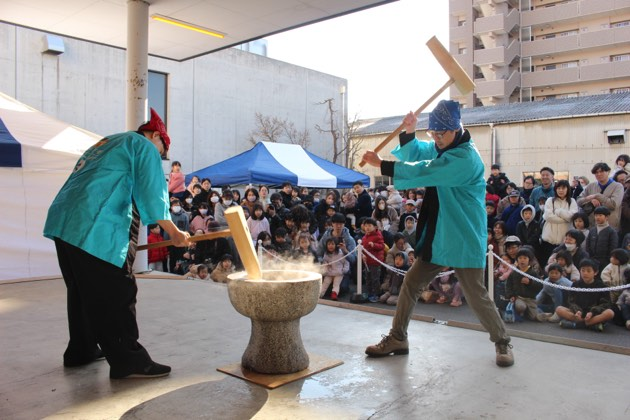
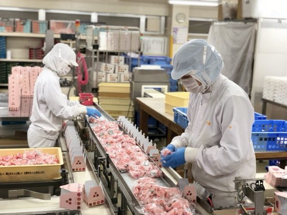
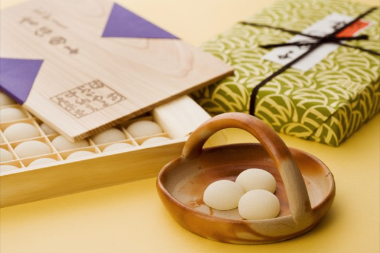
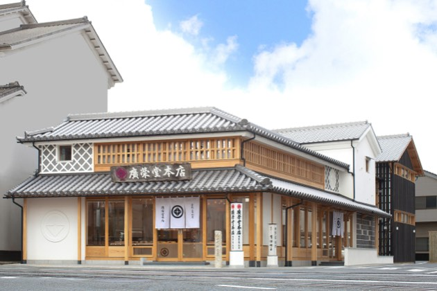
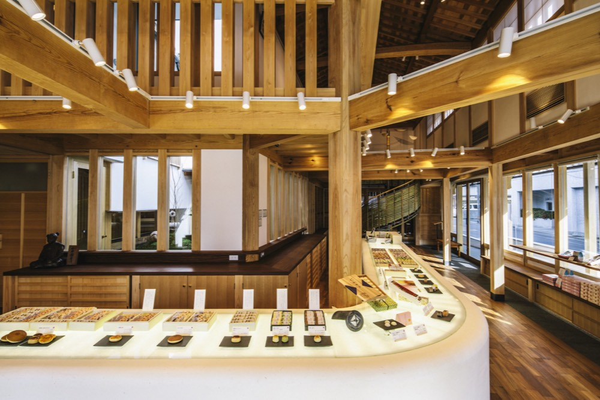

豊かな食シーンを岡山から世界へ!老舗・廣榮堂の挑戦
武田 浩一takeda koichi
株式会社廣榮堂 代表取締役
1963年岡山県生まれ。明治大学卒業後、住友信託銀行を経て1994年に廣榮堂入社。「日本のものづくりに生きる」と覚悟を決め、2006年に代表取締役就任。新工場建設や古民家再生手法による店舗展開、2023年の経営理念刷新、フランス・パリへの進出など伝統を守りつつ革新に挑む。社員主役の組織づくりを進め、創業170周年の節目を機に、次世代への技と想いの継承に邁進している。
企業サイトを見るCHAPTER 01
金融界から飛び込んだものづくりの世界への原点

Qなぜ地元岡山で、銀行員から家業である和菓子製造の道へ進まれたのでしょうか?
A大学卒業後は東京で信託銀行に勤務していました。当時はバブル景気の真っただ中で華やかな時代でしたが、1993年に転機が訪れました。記録的な長雨と冷夏によって日本全土が深刻な米不足に陥り、コメを求めてスーパーに行列ができる社会混乱を目の当たりにしたのです。さらに急激な円高のあおりを受け、国内の優れた工場が次々と海外へ移転を始めていました。
カネさえあれば何でも買えるというバブルの風潮に対し、ものづくりの家に生まれ育った私は強い心の痛みを覚えていました。戦後、日本を支えてきたのは真摯なものづくりです。翌年にロンドンへの異動が決まりかけていたことを知りましたが、「日本のものづくりに生きる」と覚悟を決め、進路を岡山へ変えて1994年に入社しました。これが私の原点であり、経営者としての第一歩でした。
Q全くの異業種への転身や経営への参画に、不安はなかったのですか?
A不安よりも、日本のものづくりの世界で力を試したいという高揚感が強かったです。私の仕事観のベースには、20代の社会人経験の中で経験した二つの大きな旅があります。
一つ目は大学卒業前の1987年、閉山直後の長崎県高島炭鉱への旅です。「人にとって仕事の意味とは何か」を探るため、元炭鉱労働者のご家族の家に居候させていただき、仕事や時代について深く語り合いました。二つ目は退職前、バックパッカーとしてヨーロッパを回った旅です。ポルトガルで出会った劇作家のH氏と旅をともにし、歴史や芸術、日々の食と人生を心から楽しむヨーロッパの豊かな生き方に感銘を受けました。
これらの経験から、代表就任時には「社員が社長に自由に文句を言える風通しの良い会社にしよう」と決意しました。先代の父からの「何を変えてもよいが、廣榮堂の暖簾に対する期待感と信用だけは下げるな」という教えが、今も私の経営の大きな柱となっています。
CHAPTER 02
美味しさへの専門特化と暖簾を守る覚悟
Q廣榮堂の事業の特徴や、他社にはない強みについて教えてください。
A私たちは安政3年(1856年)の創業以来、岡山名物の「きびだんご」を中心に四季折々の菓子を製造・販売しています。もともとは瀬戸物屋でしたが、日常の食べ物だったきびだんごをお茶菓子や旅の友とするため、もち米や上白糖、水飴を用いた現在の製法を完成させ、商売替えをしました。池田藩主からも認められ、備前の国印である「釘抜き紋」の使用を許された歴史があります。
他社との大きな違いは、「美味しいきびだんごを作るために、製造機械の設計から特注で関わっている」点です。理想とする柔らかさと食感を完璧に表現するため、機械メーカーとオーダーメイドで設備を開発することから始めています。この「当たり前の美味しさを完璧にこなす」技術への追求こそが私たちの優位性です。さらに「ISO22000」を取得し、安心・安全なお菓子作りを徹底しています。
Q事業を行う上で、最も大切にされている信念や経営理念は何でしょうか?
A廣榮堂には、明治19年(1886年)に明治天皇へきびだんごを献上し、「日本一のきびだんご」とのお言葉を賜った誇り高い歴史がございます。
私たちはこの伝統を礎に、きびだんごを原点として、伝統文化を未来へつなぎながら食の持つ可能性を拡げ、笑顔と感動を生み出すことを大切にしてまいりました。
そして、こうしたこれまでの歩みと想いを改めて言語化し、全社で共有するため、2023年3月にミッション・ビジョン・バリュー(MVV)を刷新。
先人の知恵や自然の恵みに真摯に向き合い、地域の生産者の皆様と深く連携しながら、日本の風土に育まれた“豊かな食シーン”を岡山から世界へ発信していくことをビジョンに掲げました。
この信念を全社員で共有し、伝統を守ると同時に、常に革新に挑み続けております。





CHAPTER 03
地域との絆を深める取り組みと心地よい環境づくり

Q地域社会やお客様との繋がりにおいて、具体的にどのような活動をされていますか?
A地域に深く根ざした老舗として、皆様との絆を大切にしています。毎年年末には地域の方々をお招きし、昔ながらの「餅つき大会」を開催しています。つきたてのお餅や温かいぜんざいを振る舞う、笑顔あふれる恒例行事です。
様々な企業とのコラボレーションも展開しており、その人のため、その瞬間だけのために作る「特注のきびだんご」など、枠にとらわれない柔軟な挑戦も続けています。
Q直営店の店舗づくりや、空間へのこだわりについてお聞かせください。
A私自身、建築という分野が本当に大好きで、直営7店舗の空間づくりには設計の段階から深く関わっています。創業の地である「中納言本店」は木組みの技術を駆使した日本建築であり、「藤原店」などでは「古民家再生」の手法を積極的に取り入れています。
単に商品を提供するだけでなく、お客様が日常から離れ、素顔に戻って安心して過ごせる心地よい居場所を提供したいからです。店舗に併設されたカフェ空間では、お菓子とともに洗練された空間や文化的背景を五感で体験していただけます。働く社員が安心して輝ける環境を整えることと、お客様がリラックスできる空間を創り出すこと。この両輪を支える組織作りこそが私の使命だと感じています。
Q今後の目標や、世界市場への挑戦についてもお聞かせください。
A私たちのビジョンには、「豊かな食シーンを岡山から世界へ」というスローガンを掲げています。岡山の地で育まれた素晴らしい和菓子文化を、国や文化を越えて世界へ届けていきたいと考えています。その具体的な挑戦として、2年前からフランス・パリへのきびだんごの輸出をスタートさせました。
海外市場への進出という挑戦は、ブランド価値の向上だけでなく、若い世代に対するリクルート活動において「この会社で新しい挑戦がしたい」と思ってもらえる大きな効果を生んでいます。今年、廣榮堂は創業170周年の節目を迎えることができました。地域に親しまれ、観光で訪れた方には「岡山の思い出の味」として選んでいただける関係を大切にしながら、スピード感を持って挑戦を続けてまいります。